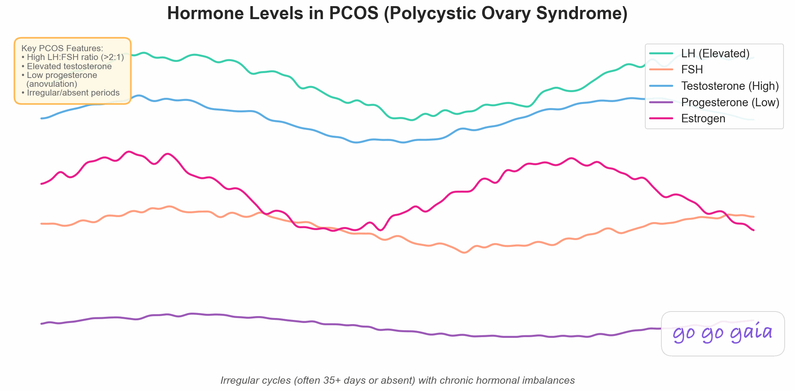

Can You Track Your Cycle With PCOS? Yes, Differently
You've probably tried a period tracker before and watched it confidently predict a date that never happened. That's not a sign tracking doesn't work for you. It's a sign the app is built for the wrong kind of cycle. Here's what actually helps.
Educational content, not medical advice. For personal concerns, please consult your doctor.
Quick Answer: Can You Track Your Cycle With PCOS?
You can, and it's worth doing, but the goal has to change. Most period trackers are built to predict your next period from an average cycle length, and PCOS cycles often don't hold to a consistent average.
What works instead is pattern-first tracking: logging bleeding, symptoms, and other patterns as they happen rather than relying on a forecast. Over a few months, that record shows your real cycle range, how often you skip a period, and what symptoms tend to cluster together, which is exactly what's useful for a doctor and for you.
PCOS (polycystic ovary syndrome) is one of the most common reasons periods become irregular, and it affects an estimated 6 to 12% of people of reproductive age in the US.[1] If you have it, you've probably already noticed that most tracking apps seem designed for someone else's cycle.
Why Prediction-First Apps Struggle With PCOS
Standard period trackers work off a simple idea: look at your last few cycle lengths, average them, and predict the next one. That works reasonably well when your cycles are close to a regular length.
PCOS often breaks that math. Cycles can run much longer than typical, ovulation can happen late in the cycle or not happen at all in a given month, and some months may have no period at all.[2] An app trying to average that into a single predicted date doesn't have much consistent signal to work with, so its guesses tend to drift further off the longer things stay irregular.
This is a known enough pattern that other trackers built specifically for PCOS use a similar pattern-first approach instead of a strict prediction model, because the prediction model is the part that breaks first.

PCOS hormone patterns don't follow the same steady rhythm a prediction model expects, which is why the math behind most trackers struggles here.
What "Tracking" Should Mean Instead
If prediction isn't the point, what is? Two things: building your own real baseline, and catching patterns in your symptoms.
A baseline means knowing your actual cycle range, not a textbook 28 days. Some months might be 35 days, some 50, some skipped entirely. None of that is a tracking failure. It's the data. Once you have a few months logged, you know what's normal for you, which makes it much easier to spot when something genuinely changes.
Symptom patterns are the other half. PCOS symptoms don't always show up neatly around a period, so logging them independent of cycle day matters more than it would for someone with a regular cycle.
What to Log With PCOS
You don't need to track everything. A short, consistent list beats a long one you abandon after two weeks.
- Bleeding days, including light or unusual bleeding, not just what feels like a "real" period.
- Cycle length, counted from the first day of one bleed to the next, even when it's irregular.
- Skin changes, like breakouts, since hormonal skin patterns are common with PCOS.
- Energy levels, logged as a simple daily rating rather than a detailed description.
- Mood, which can shift with hormonal patterns over weeks, not just around a period.
- Weight, if that's something you and your doctor already track, logged descriptively rather than as a target.
None of this is about diagnosing anything yourself or chasing a specific number. It's a record. A tracking app like Go Go Gaia can hold all of this in one place and let you log on any day, whether or not you're bleeding, so nothing depends on a predicted date that may never arrive. Correlation insights can then show you things like "skin breakouts tend to cluster in the weeks before longer gaps between periods," which is the kind of pattern that's hard to spot by memory alone.
Why Cycle-Day Tracking Isn't the Same Thing as PCOS Tracking
A lot of tracking apps organize everything around "cycle day 1," "cycle day 14," and so on. That structure makes sense for a regular cycle, where the days line up with a predictable hormonal rhythm.
With PCOS, cycle day can be a much less useful anchor. If your last period was 52 days ago and you're not sure when (or whether) the next one is coming, "cycle day 34" doesn't tell you much on its own. What matters more is the calendar date and what's happening on it, not where it falls in a cycle that might not follow the usual shape.
This is part of why a symptom-first approach tends to work better with PCOS than a cycle-day-first one. Logging by date, rather than by an assumed cycle position, means your data still makes sense during long gaps between periods, not just the weeks immediately around bleeding.
Reading Your Own Pattern Over Time
Give it a few months before expecting to see anything. Irregular cycles are, by definition, less predictable month to month, so a single cycle rarely tells you much. What starts to show up after 3 to 6 months is more useful: your typical cycle range, how often periods are skipped, and which symptoms tend to show up together.
That record is also what a doctor actually wants to see for a PCOS-related visit. A description of "irregular periods" is vague. A log showing cycle lengths ranging from 40 to 65 days over four months, with breakouts and low energy clustering in the longer stretches, is specific and useful.
If your cycles are irregular for reasons other than PCOS, or you're not sure yet what's driving it, our roundup of the best period trackers for irregular cycles covers apps built around the same pattern-first idea.
A pattern is worth more than a prediction
With PCOS, the useful thing isn't guessing your next period date, it's the record you build logging cycles and symptoms as they actually happen.
Go Go Gaia lets you log freely on any day and shows correlations across your symptoms, cycle, energy, and skin, without needing a regular cycle to work from.
Start a Pattern-First LogThe Bottom Line
You can track your cycle with PCOS, it just means judging tracking success differently. A prediction that's off by two weeks isn't the app failing you, it's the wrong tool for an irregular cycle. Switch the goal to building a pattern-first record of your bleeding, symptoms, and general trends, and tracking becomes genuinely useful again, both for you and for whoever you're bringing that data to.
Related Reading
Stop expecting a prediction. Start building a record.
A few months of logged cycles and symptoms tells you (and your doctor) far more than any forecast ever could.
Try Go Go Gaia Free